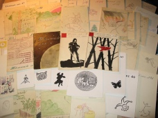

{kind=link}

Страницы авторов "Тёмного леса"
Литературный Кисловодск и окрестности
Пишите нам! temnyjles@narod.ru
Журнал "Тёмный лес" издается Юрием Насимовичем с 1969 года. Первые 28 лет он печатался на машинке тиражом поначалу 3 - 4, потом - до 12 - 16 экземпляров. С 1998 года он набирается на компьютере. Старые номера отсканированы.
N28 и N29 найти не удалось. Обращаемся к читателям: если вдруг у вас сохранился один из этих двух номеров, предоставьте его, будьте любезны, ненадолго для сканирования!
|  |
N1 (1969 г.) N2 (1970 г.) N3 (1970 г.) N4 (1970 г.) N5 (1970 г.) N6 (1971 г.) N7 (1972 г.) N8 (1972 г.) N9 (1972 г.) N10 (1973 г.) N11 (1973 г.) N12 (1974 г.) N13 (1974 г.) N14 (1974 г.) N15 (1975 г.) N16 (1975 г.) N17 (1976 г.) N18 (1976 г.) N19 (1977 г.) N20 (1978 г.) N21 (1979 г.) N22 (1979 г.) N23 (1979 г.) N24 (1979 г.) N25 (версия 1) (1980 г.) N25 (версия 2) (1980 г.) N26 (1983 г.) N27 (1982 г.) ... N30 (1986 г.) N31 (1988 г.) N32 (1989 г.) N33 (1989 г.) N34 (1990 г.) N35 (1991 г.) N36 (1992 г.) N37 (1993 г.) N38 (1994 г.) N39 (1995 г.) N40 (1996 г.) N41 (1997 г.) N42 (1998 г.) N43 (1999 г.) N44 (2000 г.) N45 (2001 г.) N46 (2002 г.) N47 (2003 г.) N48 (2004 г.) N49 (2005 г.) N50 (2006 г.) N51 (2007 г.) N52 (2008 г.) N53 (2009 г.) N54 (2010 г.) N55 (2011 г.) N56 (2012 г.) N57 (2013 г.) N58 (2015 г.) N59 (2017 г.) N60 (2017 г.) N61 (2018 г.) N62 (2018 г.) N63 (2019 г.) N64 (2020 г.) N65 (2021 г.) N66 (2021 г.) N67 (2023 г.) |
Ю.Насимович. Так жили поэты (алфавитный справочник: авторы журнала "Тёмный лес")


Последнее изменение страницы 31 Jan 2023